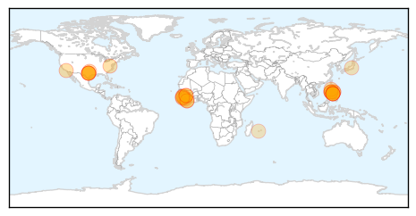
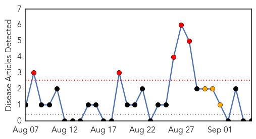

Ebola
30-Day Web Trend
0 alerts, 0 warnings

30-Day Twitter Trend
0 alerts, 0 warnings
Article Locations
Article Confidences

Top Articles:
- 1.000
- Liberia Is Declared Free of Ebola (Again)
- 1.000
- PH monkeys infected with Ebola not lethal to humans
- 1.000
- Philippine Monkeys Infected with Ebola not Lethal to Humans — Naharnet
- 1.000
- Village in Sierra Leone quarantined after Ebola death
- 1.000
- Worried about Ebola? Get your flu shot instead
- 1.000
- Nonlethal Ebola strain found in PH monkeys
- 1.000
- Africa - News and Analysis
- 0.999
- Philippine monkeys infected with Ebola not lethal to humans
- 0.999
- Philippine monkeys infected with Ebola not lethal to humans
- 0.999
- 200 to Be Vaccinated In Sierra Leone After Ebola Death
- 0.998
- Village of 1,000 people quarantined
- 0.997
- Ebola Reston virus detected in captive monkeys
- 0.996
- Review cites problems at Texas hospital during Ebola crisis
- 0.994
- Poor communication, inadequate prepartion cited in review of Ebola crisis at Dallas hospital
- 0.991
- Ebola transmission in Liberia over. Nation enters 90-day intensive surveillance period
- 0.982
- Philippine monkeys infected with Ebola not lethal to humans
- 0.981
- ‘Good’ Ebola virus found in PH monkeys
- 0.975
- Philstar Mobile
- 0.973
- Philippine Monkeys Infected With Ebola Not Lethal to Humans
- 0.959
- Ebola Reston Virus found in monkey breeding facility
- 0.933
- Failures of Dallas hospital during Ebola crisis detailed in new report
- 0.922
- Monkeys in Philippines positive of Ebola
- 0.914
- Fleet of Ambulances to boost the restoration of basic health Services Post-Ebola
- 0.904
- Review cites problems at Texas hospital during Ebola crisis
- 0.859
- Social Mobilization and Fighting Ebola in Guinea
- 0.851
- The need for a high-level bio-lab
- 0.783
- CLG News
- 0.774
- KDU Global Family Reunion Flyer
- 0.679
- More heartbreak for Ebola survivor
Top Tweets:
- 0.966
- Texas hospital wasn't prepared to handle patients with Ebola virus, report says - Fox News http://t.co/boHbRuerWQ ebola EVD
- 0.966
- Texas hospital wasn't prepared to handle patients with Ebola virus, report says - Fox News http://t.co/7lMVNKFe1E ebola EVD
- 0.920
- Philippine monkeys infected with Ebola not lethal to humans - Yahoo News http://t.co/LoR8lSz7B6 ebola EVD
- 0.895
- Sierra Leonean Village Quarantined After Ebola Death - The Guardian Nigeria (satire) (press releas... http://t.co/pM3tVxRJvb ebola EVD
- 0.807
- CDC Director Talks About Ebola, Global Health Security - Voice of America http://t.co/bD2WPIerGr ebola EVD
- 0.762
- Texas hospital wasn't prepared to handle patients with Ebola virus, report says - Fox News http://t.co/H0qgBc4AMP
- 0.721
- Worried about Ebola? Get your flu shot instead - http://t.co/hUVtUE9zMs http://t.co/R2AZDWTZi1 ebola EVD
- 0.656
- Nonlethal Ebola strain found in PH monkeys - http://t.co/Kl01SJy01T http://t.co/4PUieEZRnv ebola EVD
Bubonic Plague
30-Day Web Trend
5 alerts, 3 warnings

30-Day Twitter Trend
0 alerts, 0 warnings

Article Locations

Article Confidences

Top Articles:
-
No articles found for Sep 05, 2015
Top Tweets:
-
No tweets found for Sep 05, 2015